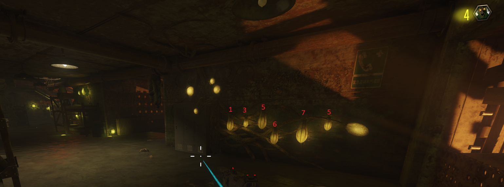

Requisitos: Tener un cubo.
Para activar la melodía de la nana de Samantha, tendremos que ir a la zona del agua morada, dentro del búnker, y observar las esporas que estan colgando.
Tendremos que rellenar cada bolsa con el agua morada un número determinado de veces para que la nana empiece a sonar. Aquí el número de veces que tenemos que llenar cada bolsa.
